Water Fuel Cell ( WFC )
Researches
created on June 12, 2008 - JLN
Labs - June 26, 2008
Toutes les
informations et schémas sont publiés gratuitement ( OpenSource
) et sont destinés à un usage personnel et non commercial
All informations and
diagrams are published free (OpenSource) and are intended for a private use and a non commercial
use.
The WFC ( Water Fuel Cell ) based on the work of Stanley Meyer uses ordinary tap water or distilled water, this is not a common Faraday electrolysis process, the WFC uses the parametric resonance effect with High Voltage and Low Current to split the water molecule. The purpose of this WFC project is trying to replicate the results obtained by Stanley Meyer...
To understand the main principle of Stanley Meyer's WFC, I suggest strongly to read this paper :
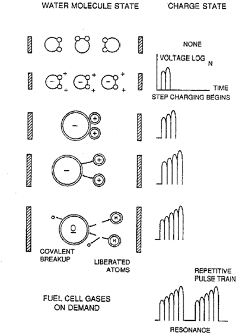
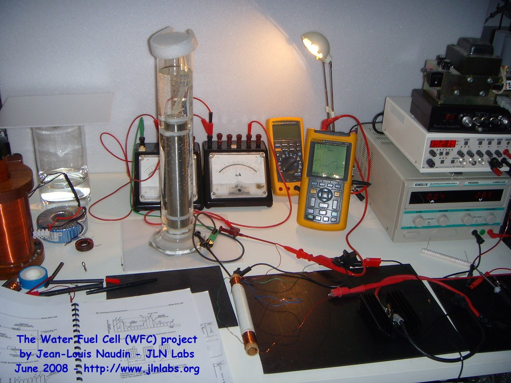
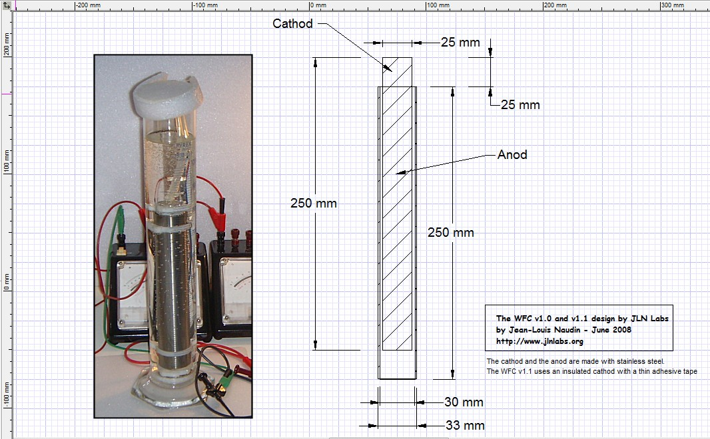
Preliminary tests of the 1st WFC v1.0 ( June 12, 2008):
Below, the video of the experimental WFC v1.0 working in resonance mode with distilled water. A high flow of gases is produced at the WFC v1.0 resonance frequency. You may notice that, in this case, the size of the bubbles produced are very tiny compared to a common electrolysis process.
Parametric resonance tests of the WFC at 2*fo and at 0.5*fo :
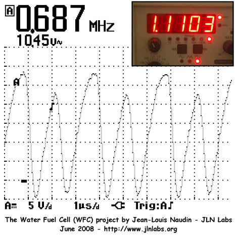
When
the frequency of the pump is set to Fpump = 2*fo = 1.110 MHz
the resonance of the WFC is fo= 0.687 Mhz
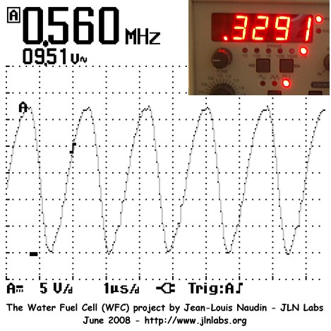
When
the frequency of the pump is set to Fpump = 0.5*fo = 0.329 MHz
the resonance of the WFC is fo= 0.560 Mhz
For more information about parametric resonance, click here
Principle of the parametric resonance
Test of WFC v1.1 with an insulated cathod
The center electrode of the WFC v1.0 has been covered with a thin adhesive plastic sheet so has to get a fully insulated cathod. So, it is now possible to get the Voltage Intensification with an electrical step charging effect. Below the measured specs of the new insulated WFC v1.1.
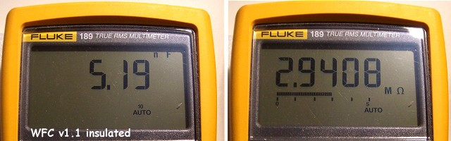
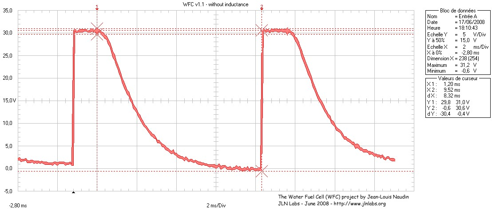
Above : The WFC 1.1 has been tested with 30V squared
pulses at 105 Hz.
When the voltage is switched off, the WFC acting as a water
capacitor, discharges on itself.
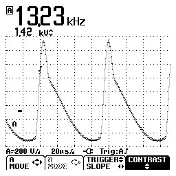
A 246 mH coil have been connected in parallel with the WFC v1.1
at the output of the VIC circuit.
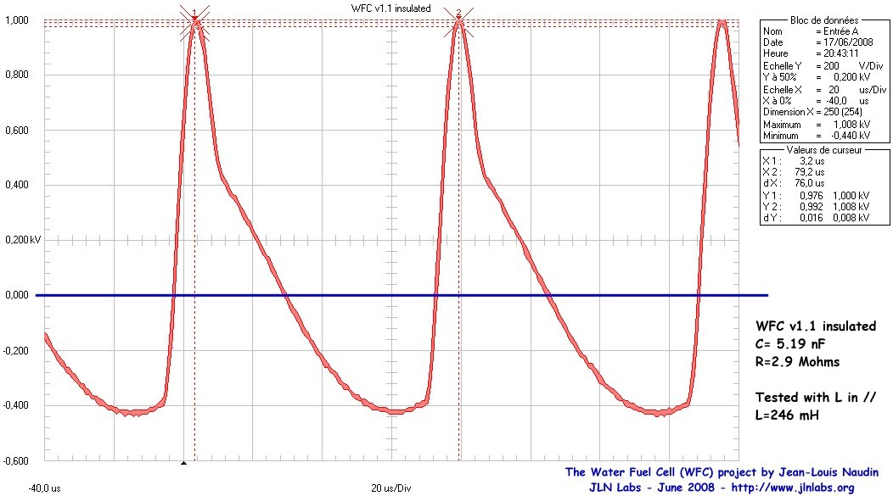
The voltage can be stepped up to 1.4 kV peak-peak at 13 kHz
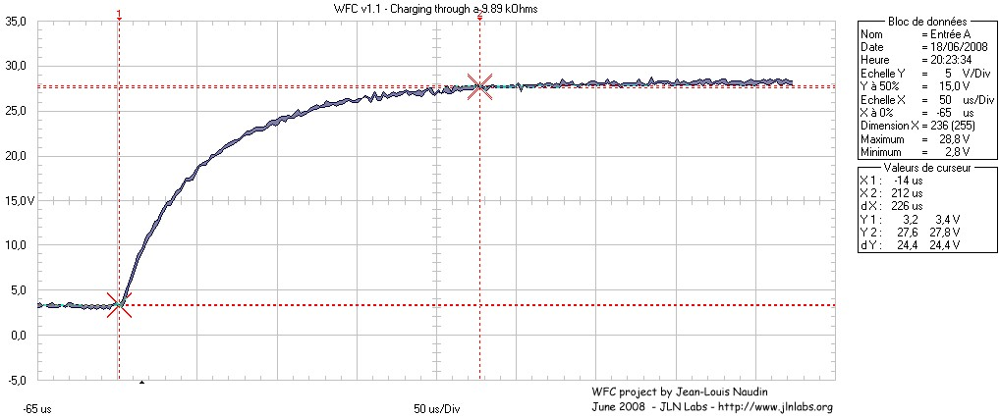
Above : The WFC v1.1 is charged through a 9.89 kOhms
resistor with the DC power supply. Now, the WFC v1.1 act as a
true capacitor.
The calculated value from the curve ( 4.7 nF ) is nearly close to
the measured value with the digital capacimeter ( 5.19 nF ).
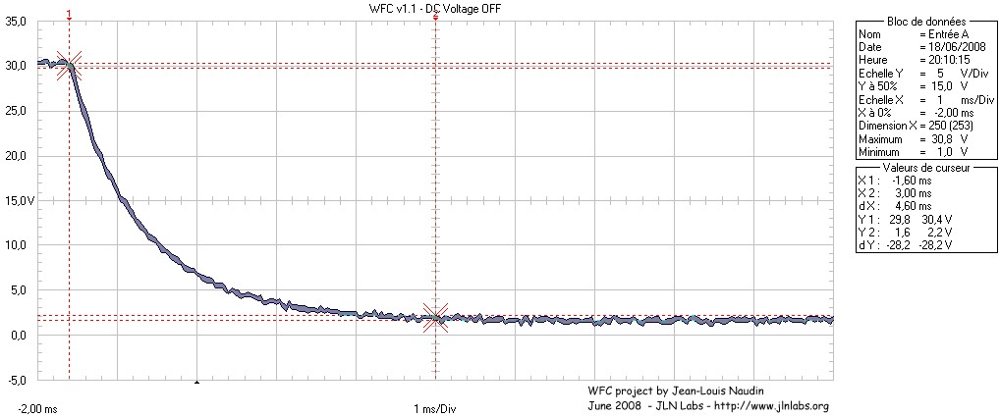
Above : The WFC capacitor is disconnected from the DC
power supply, its discharges on itself.
It is interesting to notice that the calculated value ( 196
kOhms) from the curve of the internal
resistance of the WFC v1.1 is less than the measured value with
the digital multimeter ( 2.9 MOhms ).
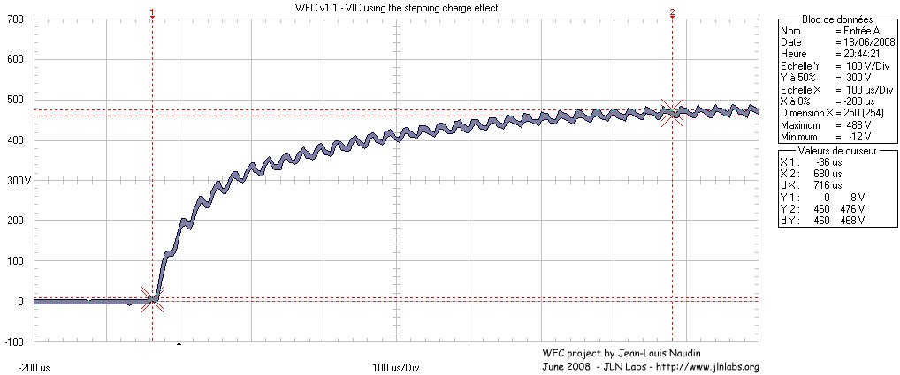
Above : The WFC v1.1 is charged with the VIC, you see
clearly the stepping charge effect.
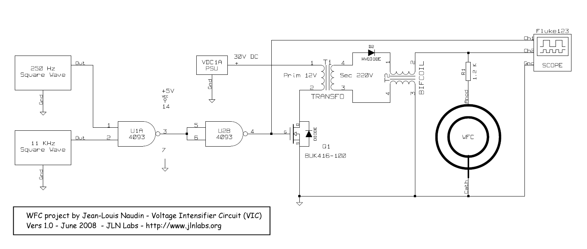
The T1 transformer is a common 220v/12v 60VA transformer used in reverse mode. The use of a toroïdal transformer with a ferrite core will be better to minimize the HF losses in the core. The T2 transformer uses a bifilar coils as described below :
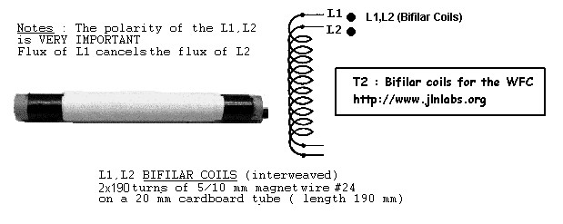
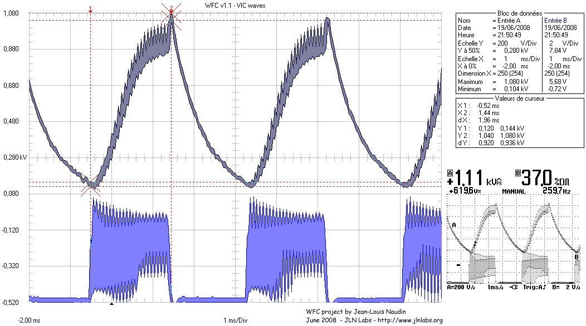
Above : The VIC ( Voltage Intensifier Circuit ) is now
working. The WFC v1.1 is charged up to 1.1 KV in stepping charge.
Notes : With the design v1.1, I haven't yet got the same density of bubbles observed in the v1.0, the WFC v1.1 has been designed so as to get a true capacitor, the stepping charge effect can be observed has Stanley Meyer as described in his technical notes and his patent. The adiabatic charge effect of this water capacitor is very important because it minimizes de losses by Joules effect in the circuit during the charging process, so the energy transfert in the WFC is optimal.
I am currently building a new WFC v2, I shall soon publish all the infos and the datas, stay tuned...
For more informations, please contact Jean-Louis Naudin : JNaudin509@aol.com
Documents and references :
Method for the production of a fuel gas
No. Publication (Sec.) :US4936961
Date de publication :1990-06-26
Inventeur :MEYER STANLEY (US)
Déposant :MEYER STANLEY (US)
Abstract of US4936961 A method for obtaining the release of a fuel gas mixture including hydrogen and oxygen from water in which the water is processed as a dielectric medium in an electrical resonant circuit.
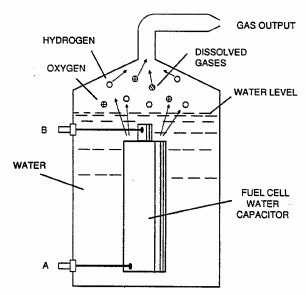
Meyer's WFC successfull replications :
 The WFC booster, producing HHO with
the GEGENE
The WFC booster, producing HHO with
the GEGENE
 Le WFC booster, produire du HHO avec
le GEGENE.
Le WFC booster, produire du HHO avec
le GEGENE.
return to the JLN Labs home page

visitors
since June 12, 2005